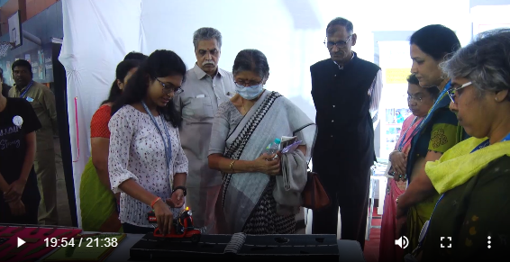

PROJECTS
-
Electronics Project
Title:
Automatic Pothole Detector
Abstract
Road accidents are a major issue in most countries. One of the reasons is due to severe irregularities in the road surface and high-speed driving. However, accidents due to road damage can be reduced by using an automatic pothole detecting device . Its general architecture can be as follows; a controller module is used to gather information like depth of pothole and height of the hump as well as its geographical location. This information is stored for further use. Ultrasonic sensors are used to measure the distance between the vehicle and the damaged road. This distance is also stored and computed. If the distance between the two is within 100 meters, an audible beep is emitted to alert the driver. Hence, this device can be especially useful in the monsoon when road damage cannot be clearly seen. It is more beneficial to two-wheeler vehicle drivers; since they do not have an inbuilt facility to provide this service.
Keywords: Pothole Detector, Ultrasonic Sensor.Presented:
Aavishkar Competition (2 levels), NAAC 2022
Gallery


-
Software Engineering Project
Title:
Image Encryption
Report: Image Encryption.docx
AWARDS & CERTIFICATES
First Ranker In FY
Campus Recruitment Training
Grab The Opportunity Event In Interaction 2022
UG Quiz Event In Interaction 2022
MS Office Course
Vedic Maths Course
-
Avishkar competition
Zonal Level (Participation) College Level (First Prize)
{kind=link}
{kind=link}
{kind=link}
CO-CURRICULAR ACTIVITIES
-
Interaction 2023
Conducted by the Department of Computer Science
Position:
Volunteer
Award: Certificate
-
NAAC 2022
National Assessment and Accreditation Council
Position:
Volunteer, member of IIC Student Unit
Role:
Presented self-made project as a representative of the department’s work and accomplishments
Demonstration of project
{kind=link}